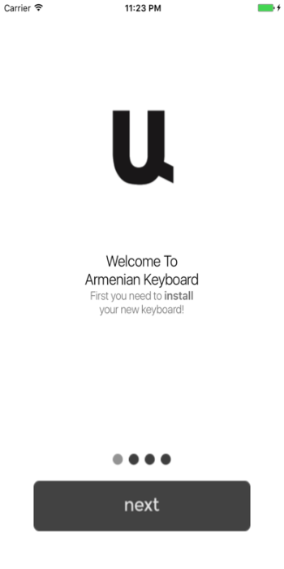
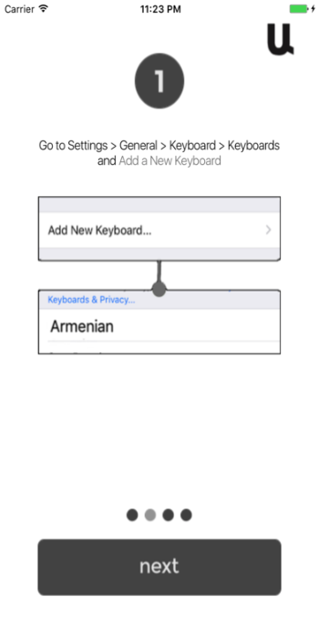
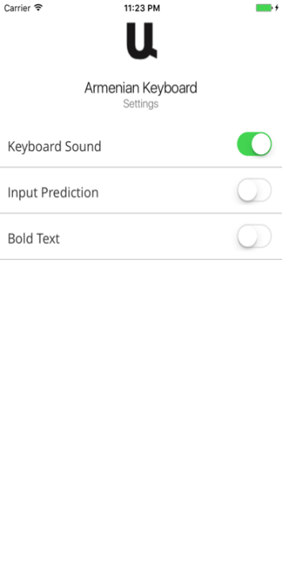
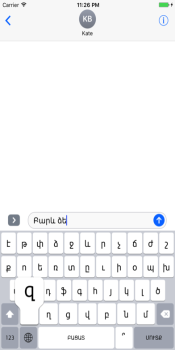
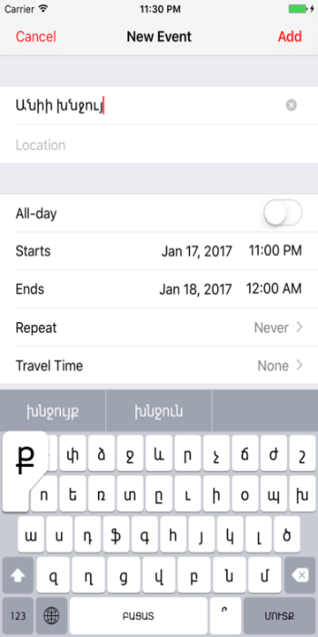

Armenian Keyboard Extension
Type in Armenian !
This is an Armenian keyboard extension for iOS system.
Fully functional keyboard maximum similar to English system keyboard, which can be used inside any application system-wide.
The keyboard provides two basic dark and light modes, and can be operated easily both in portrait and landscape modes.
The layout of the keyboard automatically adapts to the screen size of the device, for all series of iPhones and iPads devices.

Armenian Keyboard ExtensionContact Us